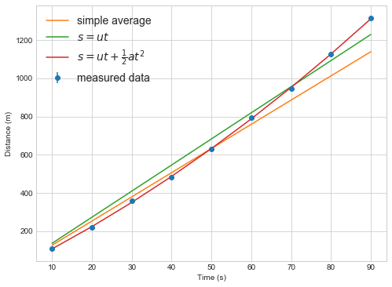
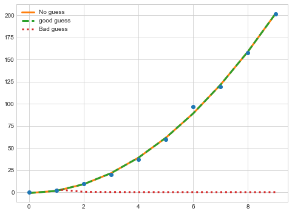

Fitting data to models
Overview
Teaching: 50 min
Exercises: 10 minQuestions
How do I fit my data to a scientific model.
Objectives
Import the scipy.optimize library.
Understand the curvefit function.
Print the results from curvefit.
Plot the data from curvefit.
Data analysis with Python
Many physical systems can be modeled as an equation, which in Python would be represented by a function f . If an appropriate function f can be found for an experiment we can use the equation to determine physical parameters releted to the experiment, and we can use this new model to predict new things about the world. Galileo used this method to calculate the trajectory of canonballs by rolling them down inclined ramps.
In experimental physics, we constrain these models by designing an experiment with two quantities. The first quantity, that we can control, is the independent variable. The second quantity, that we can measure, is the dependent variable. The relationship between these two quantities can then be used to determine some physical parameters.
A simple example of measuring the path of moving object. We could guess that the model is moving at a constant speed and design an experiment to find that speed using the model:
Scipy provides functions that can fit model functions to data.
Scipy provides a number of functions that, given a suitable model function, can return the best estimate of the unknown parameters in the model.
Consider the experiment where the time of flight of an object moving at constant speed is measured. If the experiment is correctly setup. The unknown variable we are trying to determine is the speed u. The remaining variables are time t and height s. We can design two different experiments, one where we control time (measuring at a fixed interval) and measure distance, or one where we control distance and measure time.
In Python the model function might be written as:
def distance(time, speed):
"""Calculate the distance travelled at a constant speed for a known time."""
return speed * time
def model_function(independent_data, parameter1, parameter2):
"""A template for the model function."""
dependent_data = parameter1 * independent_data + parameter2
return dependent_data
# control time, measure distance
import numpy
# derr is my estimate of errors measuring distance, my ruler is bad.
derr = 5 # metres
measured_times =numpy.arange(10,100,10) #time in seconds
measured_distances = numpy.array([ 108.2, 220.4, 360.2, 482.8,
630.6, 793.9, 947.5, 1125.0, 1314.9]) # distance in metres
distance_errors = numpy.ones_like(measured_distances)*derr
For such a simple model, the average speed can be calculated from the data quite easily.
speeds = measured_distances / measured_times
average_speed = numpy.average(speeds)
print("Average speed is {:.04g} m/s".format(average_speed))
mean_times_error = numpy.std(speeds, ddof=1)/numpy.sqrt(speeds.size)
mean_times_std = numpy.sqrt( numpy.mean( derr**2 * numpy.ones(speeds.size)) )
#error propagation, sum in quadrature
speed_error = numpy.sqrt( numpy.mean( (distance_errors / measured_distances)**2) )* average_speed
print("Standard error in average speed is {:.03g} m/s".format(mean_times_error))
print("Error in average speed is {:.03g} m/s".format(speed_error))
Average speed is 12.66 m/s
Standard error in average speed is 0.437 m/s
Error in average speed is 0.236 m/s
- You can also use
scipy.optimize.curve_fitto perform this calculation.
from scipy.optimize import curve_fit
popt, pcov = curve_fit(distance, measured_times, measured_distances)
print("Speed is %4g m/s" % popt[0])
pvar = numpy.diag(pcov)
print("Error in fitted speed is {:.03g} m/s".format(numpy.sqrt(pvar[0])))
Speed is 13.6644 m/s
Error in fitted speed is 0.31 m/s
What is popt, pvar?
poptis a one dimensional array of the best estimates for the parameter values, each entry matches the order in the function definition-
pcovis the covariance matrix showing the uncertainty and interdependence of each parameter inpopt. We take the diagonal elements aspvarfor the variance of each parameter inpopt. - The above error didn’t consider the errors in the individual data points correctly.
- Give
curve_fitthe error values using thesigmakeyword, and always useabsolute_sigma=True
Exercise 1
Predict the value of distance after 10 seconds and 100s.
Solution
Calculate predictions using the model function
curve_fitneeds a model function to make predictions.- Any calculations using that model should also use the function to avoid errors
- e.g. when plotting the predictions you should call the model_function, and not rewrite the equation
# Always predict with the model function! d10 = distance(10, popt[0]) d100 = distance(100, popt[0]) print("After 10 seconds, predicted distance = {:.4g}m".format(d10)) print("After 100 seconds, predicted distance = {:.4g}m".format(d100)) #dont_do_this rewrite10 = popt[0] * 10 print("After 10 seconds, predicted distance = {:.4g}m".format(rewrite10)) #or this hardcoded10 = 13.64 * 10 print("After 10 seconds, predicted distance = {:.4g}m".format(hardcoded10))After 10 seconds, predicted distance = 136.6m After 100 seconds, predicted distance = 1366m After 10 seconds, predicted distance = 136.6m After 10 seconds, predicted distance = 136.4m
popt, pcov = curve_fit(distance, measured_times, measured_distances,
absolute_sigma=True, sigma = distance_errors)
pvar = numpy.diag(pcov)
print("Average speed is {:.04g} m/s".format(popt[0]))
print("Error in fitted speed is {:.03g} m/s".format(numpy.sqrt(pvar[0])))
Average speed is 13.66 m/s
Error in fitted speed is 0.0296 m/s
- With the correct error estimates, the model is more certain about the speed, but the eastimate of the average speed didn’t change.
The model function needs to follow the curve_fit rules
- The function must take and array of independent data as its first argument
- The function can take any number of additional parameters that will be found using
curve_fit - The function must return a single prediction of the dependent data for each value in the independent data.
def good_model_function(xdata, parameter_1, parameter_2, parameter_3):
# code_that_calculates_a_model
return prediction
curve_fit works with multiple parameters
Extending the above experiment, what if the object was actually accelerating? The model function is now
where $a$ is the acceleration. We can change the model function and run the curve_fit code again
def distance_with_acceleration(time, speed, acceleration):
"""Calculate the distance travelled with at a constant speed for a known time
and constant acceleration."""
return speed * time + 0.5 * acceleration * time**2
from scipy.optimize import curve_fit
popt2, pcov2 = curve_fit(distance_with_acceleration, measured_times, measured_distances,
absolute_sigma=True, sigma = distance_errors)
print("Initial speed is {:.04g} m/s".format(popt2[0]))
print("Error in fitted initial speed is {:.03g} m/s".format(numpy.sqrt(pcov2[0,0])))
print("Acceleration is {:.04g} m/s2".format(popt2[1]))
print("Error in fitted acceleration is {:.03g} m/s2".format(numpy.sqrt(pcov2[1,1])))
Initial speed is 10.26 m/s
Error in fitted initial speed is 0.119 m/s
Acceleration is 0.09596 m/s2
Error in fitted acceleration is 0.00325 m/s2
The data used here is simulated, generated with an initial speed of 10.86 m/s and an acceleration of 0.1m/s2. The model with constant speed predicted a higher speed to compensate for the acceleration!
Exercise 1
How could we have quickly checked whether our model was good?
A plot would have quickly showed the linear model is not correct, or printing each value predicted might tell us something too for small amounts of data.
%matplotlib inline
import matplotlib.pyplot as plt
plt.style.use("seaborn-whitegrid")
plt.figure(figsize=(8,6))
plt.errorbar(measured_times, measured_distances,yerr=distance_errors, marker='o', linestyle='none', label="measured data")
plt.plot(measured_times, distance(measured_times, numpy.mean(speeds)),label='simple average')
plt.plot(measured_times, distance(measured_times, popt[0]),label='$s=ut$')
plt.plot(measured_times, distance_with_acceleration(measured_times, popt2[0],popt2[1]),label=r'$s=ut+\frac{1}{2}at^2$')
plt.legend(fontsize=14)
plt.xlabel("Time (s)")
plt.ylabel("Distance (m)")

Always plot your data and model fits.
curve_fit finds the best estimate of the parameters using by minimizing chi squared.
- Curve fit works by finding the combination of parameters that gives the lowest value of a parameter χ2, defined as
- The lower the value of this metric, the closer the model is on average to each measured data point.
- This metric penalizes outliers disproportionally because of the square factor
- The metric weights the penalty of each point by the inverse of the standard deviation, penalizing (genuinely) noisier outliers less than less noisy outliers.
Reduced chi squared is easier to understand and compare between data sets.
- The value of χ2 for a model depends on the number of data points and model parameters.
- A related variable is defined such that a the ideal value is 1.0.
-
To get the metric we need the number of degrees of freedom (dof) defined as the number of data points (N) minus the number of unknown parameters (m) .
- High values of χ2 are bad and suggest the model does a poor job of fitting the data.
- Low values (<<1) are also bad, suggesting the model fits the data too well.
- A low value suggests the model is fitting data better than the average error in the data should allow.
def chi2(y_measure,y_predict,errors):
"""Calculate the chi squared value given a measurement with errors and prediction"""
return numpy.sum( (y_measure - y_predict)**2 / errors**2 )
def chi2reduced(y_measure, y_predict, errors, number_of_parameters):
"""Calculate the reduced chi squared value given a measurement with errors and prediction,
and knowing the number of parameters in the model."""
return chi2(y_measure, y_predict, errors)/(y_measure.size - number_of_parameters)
print("Constant velocity model chi2r=",chi2reduced(measured_distances,
distance(measured_times,popt[0]),
distance_errors,
1))
print("Constant acceleration model chi2r=",chi2reduced(measured_distances,
distance_with_acceleration(measured_times,popt2[0],popt2[1]),
distance_errors,
2))
Constant velocity model chi2r= 109.80241339312079
Constant acceleration model chi2r= 1.1868575297735016
Exercise 2
Put a print statement inside the model function distance_with_acceleration to print out the parameter values. What is happening to the parameter values?
def distance_with_acceleration_print(time, speed, acceleration):
"""Calculate the distance travelled with at a constant speed for a known time
and constant acceleration."""
print ("speed=",speed, "acceleration=",acceleration)
return speed * time + 0.5 * acceleration * time**2
popt2, pcov2 = curve_fit(distance_with_acceleration_print, measured_times, measured_distances,
absolute_sigma=True, sigma = distance_errors)
speed= 1.0 acceleration= 1.0
speed= 1.0 acceleration= 1.0
speed= 1.0 acceleration= 1.0
speed= 1.0000000149011612 acceleration= 1.0
speed= 1.0 acceleration= 1.0000000149011612
speed= 10.255137832154007 acceleration= 0.0959638771711041
speed= 10.255137984967469 acceleration= 0.0959638771711041
speed= 10.255137832154007 acceleration= 0.09596387860107732
speed= 10.255137840593912 acceleration= 0.09596387693800011
Non-linear regression
- Mathematically,
curve_fitis using least squared error regression to find the best parameter estimate. curve_fitworks with non linear models, e.g.
When fitting non-linear functions, use the p0 keyword to start curve_fit with a good estimate
p0is used to provide a first guess of the parameters you are trying to find- If you have some idea of a parameter value, use
p0to givecurve_fita better chance of finding the global minimum error for non-linear functions - Don’t be too precise so as not to bias the fitting process.
iteration=0
def nonlinear_function(t, a, b, c):
global iteration
print (iteration, "a=",a, "b=",b, "c=",c)
iteration = iteration+1
return a*t**(b-1) + c
#generated "good" data
t=numpy.arange(10)
y=numpy.array([-0.173, 2.12, 9.42, 19.69, 37.16, 59.40, 96.59, 119.448, 158.0,201.9])
sigmaNL = numpy.ones(10)*0.5
First, try fitting the non-linear function with no initial guess
iteration=0
poptNL1, pcovNL1 = curve_fit(nonlinear_function, t, y,
absolute_sigma=True, sigma = sigmaNL)
0 a= 1.0 b= 1.0 c= 1.0
1 a= 1.0 b= 1.0 c= 1.0
2 a= 1.0 b= 1.0 c= 1.0
3 a= 1.0000000149011612 b= 1.0 c= 1.0
4 a= 1.0 b= 1.0000000149011612 c= 1.0
5 a= 1.0 b= 1.0 c= 1.0000000149011612
6 a= 77.19199892187382 b= 1.000001167729559 c= 1.0
7 a= 77.19200007212423 b= 1.000001167729559 c= 1.0
8 a= 77.19199892187382 b= 1.0000011826307376 c= 1.0
...
151 a= 2.507417147966414 b= 2.9990317544021594 c= -0.9734594072738433
152 a= 2.5074171106029874 b= 2.999031799091215 c= -0.9734594072738433
153 a= 2.5074171106029874 b= 2.9990317544021594 c= -0.9734593927681677
154 a= 2.5074210685973637 b= 2.999031031902325 c= -0.9734725519528605
Try a good guess for the parameters
iteration = 0
poptNL2, pcovNL2 = curve_fit(nonlinear_function, t, y,
absolute_sigma=True, sigma = sigmaNL, p0=(2.5,3,0))
#I think it's 2.5*t^2 with no offset
0 a= 2.5 b= 3.0 c= 0.0
1 a= 2.5 b= 3.0 c= 0.0
2 a= 2.5 b= 3.0 c= 0.0
3 a= 2.500000037252903 b= 3.0 c= 0.0
4 a= 2.5 b= 3.0000000447034836 c= 0.0
5 a= 2.5 b= 3.0 c= 1.4901161193880158e-08
6 a= 2.507540116653946 b= 2.9990074809599334 c= -0.973917163330992
7 a= 2.5075401540192055 b= 2.9990074809599334 c= -0.973917163330992
8 a= 2.507540116653946 b= 2.9990075256486275 c= -0.973917163330992
9 a= 2.507540116653946 b= 2.9990074809599334 c= -0.9739171488184953
10 a= 2.5074184226341583 b= 2.9990315172382234 c= -0.9734643979860024
11 a= 2.5074184599976044 b= 2.9990315172382234 c= -0.9734643979860024
12 a= 2.5074184226341583 b= 2.9990315619272754 c= -0.9734643979860024
13 a= 2.5074184226341583 b= 2.9990315172382234 c= -0.9734643834802524
14 a= 2.5074209783416057 b= 2.9990310475838156 c= -0.9734720313746336
Now try an unreasonable guess for the b parameter
iteration = 0
poptNL3, pcovNL3 = curve_fit(nonlinear_function, t, y,
absolute_sigma=True, sigma = sigmaNL, p0=(3,-2,0.1))
#I think it's 3/t^3 +0.1
0 a= 3.0 b= -2.0 c= 0.1
1 a= 3.0 b= -2.0 c= 0.1
2 a= 3.0 b= -2.0 c= 0.1
3 a= 3.0000000447034836 b= -2.0 c= 0.1
4 a= 3.0 b= -1.9999999701976776 c= 0.1
5 a= 3.0 b= -2.0 c= 0.10000000149011612
/Users/lee/anaconda3/lib/python3.6/site-packages/ipykernel/__main__.py:7: RuntimeWarning: divide by zero encountered in power
/Users/lee/anaconda3/lib/python3.6/site-packages/scipy/optimize/minpack.py:794: OptimizeWarning: Covariance of the parameters could not be estimated category=OptimizeWarning)
It’s always important to check the fit

Key Points
scipyprovides tools and functions to fit models to data.Use
curve_fitto fit linear and non-linear models to experimental dataUse appropriate errors in the
sigmakeyword to get a better estimate of parameter errors.Check the fit using a plot if possible
Check the χ2 value to compare the fit against the errors in the measurements.
Non linear models can be fitted, but may need an initial esimate of the parameters.